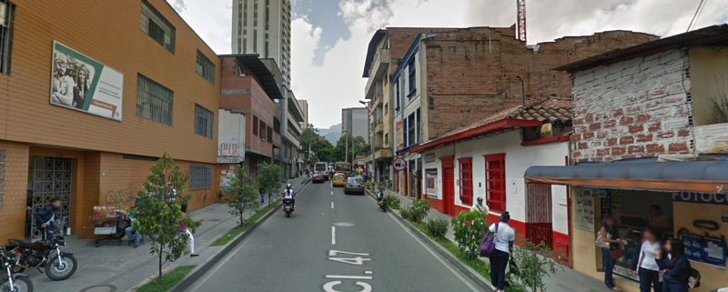

Bomboná, una calle con teatro incorporado
Por Carlos Ossa
Mirada desde la dulzura aparece como un derivativo de bombón. Otra hipótesis se plantea, como una licencia lingüística de bomberos. Pero la génesis del bautizo se inclina hacia la amargura bélica. Registro de nuestra guerra de independencia. No en vano, uno de los batallones del país ostenta su nombre.

Hasta el preludio del tranvía Ayacucho fue una calle normal, casi desapercibida. En la actualidad es destinataria de cierto volumen de las rutas sacadas transitoriamente de Ayacucho. Lo que le imprime una importancia acosada.
Bomboná se inicia en la carrera 56 y claudica en la carrera 37. Inscrita en un orden de mayor a menor, de occidente a oriente. Iniciando el periplo entre la carrera 46 y 45, la primera impresión que se obtiene es la de un sitio asfixiado por el ruido y la saturación vehicular. Paradero de buses de Sabaneta y la Milagrosa, concurren en una estrechez vial que torna milagrosa la normalidad del espacio. Sobresale un aviso de fondo amarillo y letras negras vertical anunciando San Antonio. Contraste entre edificaciones modernas en el margen izquierdo y otras antiguas en el margen derecho. Pequeños mercados de víveres en la acera del margen izquierdo. Sector de hoteles.
De la 45 a la 44, cuadra corta. Panaderías. No hay nomenclatura que señale la ubicación urbana. Sensación de asfixia auditiva. Parada de buses. Entre la 44 y 43 más parada de buses, que dificulta la movilidad vial. Comidas rápidas. Tabernas nocturnas. Calle de la impresión, litografías, plegables. Aparece el rostro del Estado, amplio edificio para el desarrollo del hábitat y la construcción. Acera amplia al margen izquierdo. Empanadas a mil pesos en letras destacadas. De la 43 a la 42, Torres de Bomboná. Al lado izquierdo acapara toda la cuadra. A la derecha parqueaderos. El Bombonazo comidas, hace sentir el registro de la calle. Ideartes. Educación superior por ciclos. Uno que otro acostado en la acera, uno que otro vendedor estacionario. De las 42 a la 41, continúa zona residencial. Grandes árboles. Aislados negocios de comidas. Los infaltables parqueaderos. Bolsas y bolsos y vidrieras. Mixtura de viejos y nuevos edificios. Pequeños rascacielos.
Entre la 40 y la 39 continúa el rascacielos, alternando con la antigua arquitectura republicana. Predominan los colores grises y verdes. Se reduce la barahúnda humana de las primeras cuadras. A mayor acceso vial, mayor soledad humana. Atravesar la 40 a las 10 antes meridiano no es ni sombra que a las 6 de la tarde. A esta hora de la noche pasar a la 39, asume características de heroísmo. Sin semáforos, ni azules de ayuda, el peatón debe encomendarse al santo de la vida para no fenecer en el intento.
De la 40 a la 39, al margen izquierdo le sirve de antesala los rascacielos, un espacio a campo abierto de parqueadero. Espacio residencial que alterna con pequeños negocios. “Reforma de modistería”, “Creaciones Chechita” y servicio técnico de motos. Entre la 39 y la 38 se presenta una escisión al margen izquierdo para darle paso a la carrera 38. Pero al margen derecho se prolonga unos metros más arriba para hacer el empalme con la misma 38.
Al llegar a la 37 este río, para utilizar una metáfora acuática, desemboca en el mar que aquí asume la identidad de multivías. Con semáforos y transversales Bomboná que sube le da paso a una 47 que baja. Y debía terminar aquí. Dado que antes de este parque amplio donde se instaló un polideportivo, existió siempre el recordado, que sirve como punto de referencia: el cuerpo de bomberos que termina conectando con el barrio El Salvador.
TEATRO MATACANDELAS
En una ciudad paganizada como la nuestra, donde lo rentable es la oración maquinal de cada amanecer, hablar de teatro como propuesta cultural, asume las características de befa, apostolado o de ingenuidad. En pleno siglo XXI, ejercer el ejercicio teatral como conducta de vida, se acerca más al desatino que a actividad racional.
Pero he aquí que con todo en contra (o caso), existe, insiste y persiste un grupo teatral como el Matacandelas, ubicado en la calle Bomboná # 43-47. A la calle le pertenece esta fortuna del arte. Como todo espíritu tocado por la grandeza, Cristóbal Peláez director del teatro, es de amplia generosidad intelectual. Me obsequia 30 minutos de su abigarrada agenda.
En su sede, una sala inmensa como el presente, desarrollamos un diálogo fraternal sobre el quehacer teatral. Con esa serenidad que dimana haber consultado en simultánea demasiadas realidades, fue desgranando ese rico historial de su grupo, su pasión y su vida.
“Matacandelas por su impacto eufónico, por su diversidad conceptual, es un ritual de excomunión. Un duendecillo burlón en la arriería paisa. Es hablar en voz baja, y sobre todo muy latino. Llevamos 36 años cumplidos de ejercicio teatral y 20 en este sector de Bomboná, que de alguna manera nos hemos transformado bilateralmente. Nos sostenemos desde lo económico con 7 principios: 1. Taquilla, 2. Venta de servicios, 3. Convenios con entidades públicas y privadas, 4. 5. 6. y 7. con la generosidad desmesurada de sus integrantes del grupo.
Hemos gozado en estos 20 años en Bomboná de una relación amorosa con nuestro público. Un promedio de 20.000 asistentes por año nos certifica una existencia para largo rato.
Manejamos una interrelación cultural con países como Finlandia, Suecia, Noruega, México, Estados Unidos, Venezuela y un largo etc.
Nos gustan varios autores. Entre los de Afuera: Samuel Beckett: “Su primer amor”, de un solo actor presentado por el grupo de Teatro Fronterizo de España, es excepcional.
Ezra Pound: con su “Ego Scriptor”, y el inolvidable Fernando Pessoa con su “O Marinheiro”, que según los entendidos es una de las 20 obras mejor presentadas por el teatro colombiano y que nos identifica.
Entre los nacionales: Andrés Caicedo con sus “Angelitos Empantanados” es de gran aceptación del público joven. Otro impacto social es “Velada Metafísica”, de Fernando González.”
En este punto haciendo alarde irreverente de mi parte de un conocimiento de la obra del brujo de Otraparte, le dije que no conocía ninguna obra con esta titulación. Y para mi vanidad aceptó que eso era “un collage de la extensa obra del maestro envigadeño”.
Me agregó de otros autores nacionales como Santiago García, Enrique Buenaventura y un dramaturgo de los nuevos: Fabio Rubiano.
“Somos 13 actores y con administración y servicios totalizamos 20. En el Teatro se encuentra la inteligencia, la sensibilidad, y la diversión. En cada obra está la pasión.
El teatro en un observatorio del género humano.”
Finalizamos con una pregunta extra-teatro, ¿qué es para usted la felicidad?:
“Permítame me remito a los griegos, es la ausencia de dolor.”
Ossa, C. (febrero de 2015). Bomboná, una calle con teatro incorporado. Historias Contadas (97), 8 - 10.